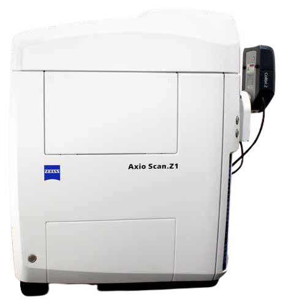

Carl Zeiss Axio Scan.Z1 slide scanner allows high-throughput automated
imaging of large numbers of slides loaded automatically from a magazine
with the capacity of 100 slides. A sensitive sCMOS camera
allows detecting weak fluorescence while a colour camera
is suitable for transmitted light imaging of histologically stained
samples.
Available
techniques:
- Transmitted light imaging
- Widefield multi-channel fluorescence imaging
- Automated scanning of large numbers of slides
Objectives:
- Fluar 5x/0.25 dry, FWD 12.5 mm, CG 0.17 mm
- Plan Apochromat 10x/0.45 dry, FWD 2.0 mm, CG 0.17 mm
- Plan Apochromat 20x/0.8 dry, FWD 0.55 mm, CG 0.17 mm
- Plan Apochromat 40x/0.95 dry, FWD 0.25 mm, CG 0.13 - 0.21 mm
[FWD = free working distance, CG = cover glass]
Fluorescence
excitation sources:
- Colibri 7 LED lamp (LEDs: 365 nm; 470 nm; 540 - 580 nm; 625 nm)
Filter sets:
- DAPI (G 365; 395 LP; 445/50)
- GFP (470/40; 495 LP; 525/50)
- Cy3 (545/25; 570 LP; 605/70)
- Cy5 (640/30; 660 LP; 690/50)
Detectors and
cameras:
- Hamamatsu Orca Flash 4.0 V2 sCMOS (2048x2048 pixels, 6.5 µm/pixel)
- Hitachi HV-F202SCL 3 CCD progressive scan colour camera (1688x1248
pixels, 4.4 µm/pixel)
Software:
Other features:
- automatic loading of slides from a magazine of 100 slides (76 x 26
mm)
- a colour camera for quick slide preview
- barcode recognition (for slide labels)
| Usage fees [SGD/hour] |
NTU |
Others |
| 20 |
30 |
| Location |
CSB 11-02T-01 |
| Contact |
nobic.facilities@e.ntu.edu.sg,
kbala@ntu.edu.sg |
BACK TO TOP